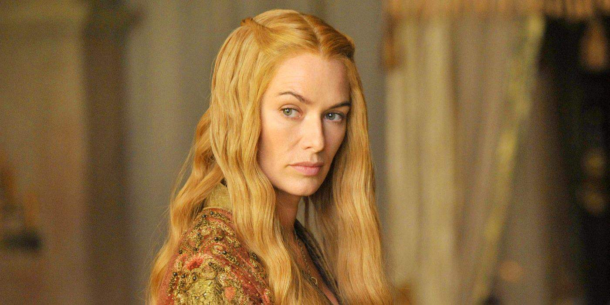

Cersei Lannister
Cersei Lannister é uma das personagens centrais de Game of Thrones, conhecida por sua ambição e determinação em manter o poder. Ela é filha de Tywin Lannister e irmã gêmea de Jaime Lannister, e desempenha um papel crucial na luta pelo controle dos Sete Reinos.
Origens e Família
Detalhes sobre a origem de Cersei, sua relação com a família Lannister, e como isso afeta sua identidade e as dinâmicas de poder em Westeros.
Contribuições e Batalhas
Discussão sobre os principais eventos e batalhas em que Cersei Lannister teve papel crucial, incluindo a Batalha da Água Negra e a destruição do Grande Septo de Baelor.
Legado
Exploração do impacto de Cersei Lannister na conclusão da série e seu legado em Westeros após o fim de Game of Thrones.